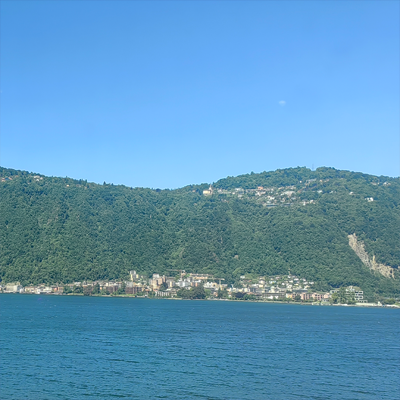

初到瑞士时我并不喜欢在白天出去活动,我一般喜欢在傍晚和早晨出去散散步.瑞士虽然是山地多,但是喜欢骑车的人并不少.我曾经见过几个很执拗的、以比步行速度还慢的、一定要把车骑上山顶的瑞士人.瑞士因为多山,所以常见有轨上下山的电车,有的电车只会在非常短的区间里来回上下.
我在瑞士散步的时间段(傍晚和早晨),基本只能见到一些独自跑步和遛狗的人,那时候经常一整条街就只有我一个人,我心里会产生一种"如果长期呆在这会很难受"的感慨,在国内享受惯了人多的便利性,一时还无法适应这里人少的舒适性.那是一种"好坏都只和自己有关"的剥离感,在国内时经常会产生来自别人肯定的幸福、和来自别人不认可的痛苦,不是说不够超然,当你身边确确实实有那么大的人密度时谁都无法做到真正的抽离,但在瑞士很短的旅居时间里,当我发现自己身处一个完全没有中国人的异国环境,无论内向还是外向,你都只能向内思考、和自己相处.
某个早上我走到了超算中心附近的一个墓地,那是一个非常漂亮的墓地,里面的墓碑花样百出、比别墅风格还要迥异多样化,那是一种很强烈的表达"我是谁、我曾经存在过、我怎样活过"的方式,谁说外国人不在意身后事?人性是相似的,但是由于后天的生产方式和社会结构不一样,我们走向了不一样的活法,但是在某一个节点比如死亡,我们在意的东西又形成了交集.
我所在的卢加诺并不算大,对提切诺大学和国家超算中心的考察也很快完成,离开前最后一眼回望整个城市,它被阿尔卑斯山环绕、怀抱湖水,我想这对我来说是"天涯海角",对这的人来说却又是"角落".

瑞士美丽的阿尔卑斯山风光